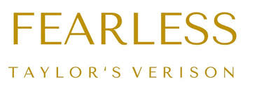
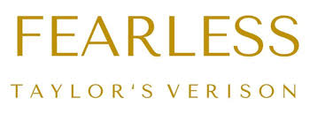

.png)


.png)

Taylor Alison Swift (Reading, 13 de dezembro de 1989) é uma cantora, compositora, diretora, instrumentista, produtora musical e atriz dos Estados Unidos da América. Taylor assinou contrato pela gravadora Big Machine Records em 2006 e debutou nas paradas musicais aos 16 anos, com o seu single Tim McGraw, canção dedicada ao cantor que a convidou para abrir seus shows, começando assim sua carreira. Seu álbum de estreia homônimo foi lançado em novembro do mesmo ano e vendeu 5 milhões de cópias nos Estados Unidos, onde foi certificado cinco vezes platina. Os cinco singles do álbum foram top 10 nos charts country e top 40 no Hot 100 da Billboard. Em 2007, ela recebeu o prêmio Horizon Award (Revelação) no CMA Awards. Em 11 de novembro de 2008, lançou seu segundo álbum, Fearless, que ficou em primeiro lugar na Billboard 200 durante 11 semanas não consecutivas. Foi o disco mais vendido nos Estados Unidos em 2009, tendo um total de sete milhões de cópias vendidas, sendo seis milhões delas nos Estados Unidos. Em 2009, Taylor ganhou o prêmio de melhor videoclipe feminino no VMA com You belong with me. A cantora ganhou 4 Grammy Awards, incluindo Disco do Ano. Em outubro do mesmo ano, Swift lançou seu terceiro álbum, Speak Now, que também estreou na primeira posição da Billboard 200, vendendo pouco mais de um milhão de cópias na primeira semana nos Estados Unidos. Em 22 de outubro de 2012, lançou o seu quarto álbum, chamado Red (cujo nome ela justificou por vermelho ser a cor que ela enxerga quando sente forte emoções). O disco foi indicado ao Grammy em 2013, mas não levou a estatueta para casa. Em outubro de 2014, Taylor Swift iniciou sua era de maior sucesso até hoje: 1989! O álbum foi um sucesso de crítica, e os hits Blank Space e Shake It Off tocam nas rádios até os dias atuais. Foi com ele que Swift arrematou o Grammy de “Álbum do Ano”, se tornando a única mulher da história a vencer a categoria duas vezes na mesma década. Após o sucesso iminente de 1989, Taylor resolveu tirar um ano sabático antes de começar a produzir seu sexto álbum de estúdio, que só foi lançado em outubro de 2017. Reputation apresentou uma nova Taylor Swift ao público, com faixas misteriosas e mais pesadas. Tendo finalizado sua era mais obscura até então, Swift resolveu voltar ao que era antes e lançou Lover, seu sétimo álbum de estúdio, cheio de composições românticas e melodias leves. O disco conta com faixas populares como ME! e You Need to Calm Down. Swift recebeu três indicações ao Grammy por este último trabalho, em categorias como Canção do Ano (Lover) e Álbum Pop Vocal, mas infelizmente não levou a melhor em nenhuma delas. Em 2020, a cantora inicia sua próxima turnê mundial, que passará pelo Brasil pela primeira vez.